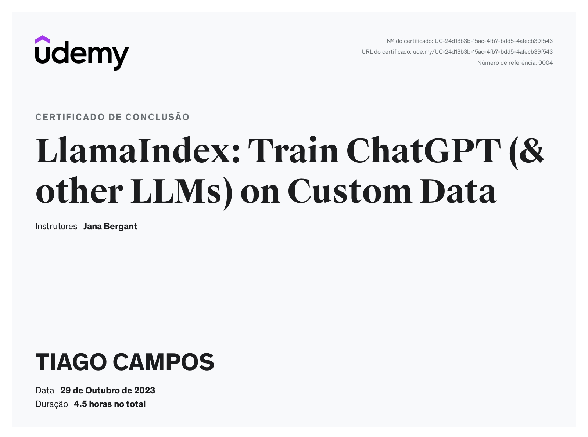
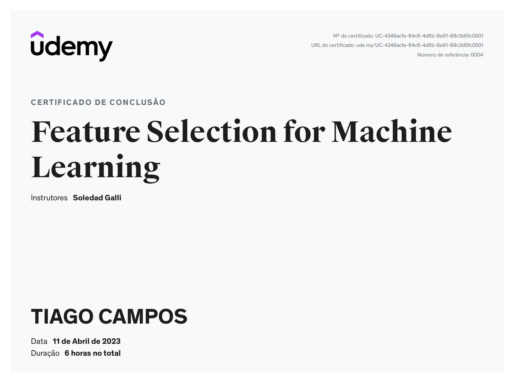
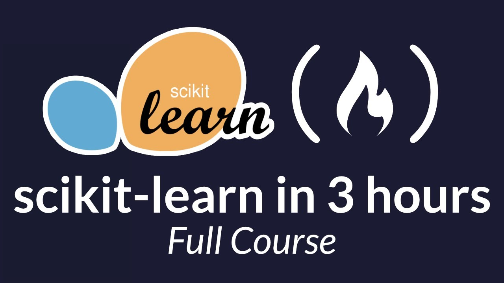

Accomplished Data Scientist with a Ph.D. in Computational Physics and extensive research experience. Currently leveraging advanced machine learning techniques and generative AI at Itaú-Unibanco. Expertise spans from high-performance simulations and computational linear algebra to cutting-edge AI technologies like LangChain, LlamaIndex, and CrewAI. Proven track record in academic research with multiple published articles and international collaborations. Skilled in both theoretical concepts and practical applications, with proficiency in Python, Fortran, and various front-end technologies. Committed to driving innovation in AI and solving complex problems through data-driven approaches.
About Me
Data Scientist at Itaú-Unibanco since April 7th, 2022, focusing on advanced AI and machine learning techniques.
I'm a versatile professional with a strong background in computational physics and data science. My expertise spans from front-end development to high-performance computing, enabling me to tackle complex data science challenges from multiple angles.
I hold a Ph.D., M.Sc., and Bachelor's degree in Computational Physics from the Instituto de Física de São Carlos, Universidade de São Paulo.
My academic journey included a Sandwich Ph.D. at the University of Regensburg, Germany, under Prof. Jaroslav Fabian, a leading figure in spintronics. I later completed postdoctoral research at the State University of New York - Buffalo, mentored by Prof. Igor Zutic, another distinguished spintronics expert.
My research focused on high-performance simulations of semiconductor systems, computational linear algebra, and spintronics. This foundation has seamlessly transitioned into my current work in financial systems, machine learning, and generative AI.
Proficient in Fortran and Python, I can adapt to various programming languages. Beyond my professional pursuits, I'm a dedicated father and enthusiastic hobbyist sys admin, always eager to explore emerging technologies.
My Academic background
Post-Doctoral Research
- 2018-2019: State University of New York - University at Buffalo, SUNY, USA
Supervised by Prof. Igor Zutic
- 2018: Universität Regensburg, Germany
Supervised by Prof. Jaroslav Fabian
- 2017-2018: Instituto de Física de São Carlos, IFSC USP, Brazil
Supervised by Prof. Guilherme Matos Sipahi
Ph.D. (2013-2017)
Instituto de Física de São Carlos, IFSC USP, Brazil (sandwiched at Universität Regensburg)
M.Sc. (2011-2013) and B.Sc. (2006-2011)
Instituto de Física de São Carlos, IFSC USP, Brazil
Published Articles
- MAYER, WILLIAM ; SCHIELA, WILLIAM F. ; YUAN, JOSEPH ; HATEFIPOUR, MEHDI ; SARNEY, WENDY L. ; SVENSSON, STEFAN P. ; LEFF, ASHER C. ; CAMPOS, TIAGO ; WICKRAMASINGHE, KAUSHINI S. ; DARTIAILH, MATTHIEU C. ; 'UTI', IGOR ; SHABANI, JAVAD . Superconducting Proximity Effect in InAsSb Surface Quantum Wells with In Situ Al Contacts . ACS Applied Electronic Materials, v. 2, p. 2351-2356, 2020.
- DIRNBERGER, FLORIAN ; KAMMERMEIER, MICHAEL ; KÖNIG, JAN ; FORSCH, MORITZ ; FARIA JUNIOR, PAULO E. ; CAMPOS, TIAGO ; FABIAN, JAROSLAV ; SCHLIEMANN, JOHN ; SCHÜLLER, CHRISTIAN ; KORN, TOBIAS ; WENK, PAUL ; BOUGEARD, DOMINIQUE . Ultralong spin lifetimes in one-dimensional semiconductor nanowires . APPLIED PHYSICS LETTERS, v. 114, p. 202101, 2019.
- CAMPOS, T; TOLOZA SANDOVAL, M A ; DIAGO-CISNEROS, L ; SIPAHI, G M . Electrical tuning of helical edge states in topological multilayers . JOURNAL OF PHYSICS-CONDENSED MATTER, v. 31, p. 495501, 2019.
- CAMPOS, T.; FARIA JUNIOR, PAULO E. ; GMITRA, MARTIN ; SIPAHI, GUILHERME M. ; FABIAN, JAROSLAV . Spin-orbit coupling effects in zinc-blende InSb and wurtzite InAs nanowires: Realistic calculations with multiband k · p method. PHYSICAL REVIEW B, v. 97, p. 245402, 2018.
- BASTOS, C. M. O. ; SABINO, F. ; FARIA JUNIOR, PAULO E. ; CAMPOS, T. ; SILVA, J. L. F. ; SIPAHI, G. M. . Stability and accuracy control of k · p parameters. Semiconductor Science and Technology (Print), v. 31, p. 105002, 2016.
- FARIA JUNIOR, PAULO E. ; CAMPOS, TIAGO ; BASTOS, CARLOS M. O. ; GMITRA, MARTIN ; FABIAN, JAROSLAV ; SIPAHI, GUILHERME M. . Realistic multiband approach from and spin-orbit coupling effects of InAs and InP in wurtzite phase. Physical Review B, v. 93, p. 235204, 2016.
- FARIA JUNIOR, P. E. ; CAMPOS, T. ; SIPAHI, G. M. . Interband polarized absorption in InP polytypic superlattices. JOURNAL OF APPLIED PHYSICS, v. 116, p. 193501, 2014.
Attended Events
- March Meeting 2019. Correlated states in magnetic quantum dots with multiple occupancy. 2019.
- March Meeting 2019. Electric tuning of topological properties in a symmetric broken gap quantum well. 2019.
- 1st Paulista-Bavarian Workshop on Nano-Tailored Semiconductor Devices (NTSD). From multiband k.p to effective spin-orbit coupling parameters for semiconductor nanowires: ZB InSb and WZ InAs. 2017.
- 1st workshop on topological quantum phenomena and quantum information science. 2017.
- 2nd Paulista-Bavarian Workshop on Nano-Tailored Semiconductor Devices (NTSD).Effective spin-orbit coupling parameters for semiconductor nanowires: zincblend InSb and wurtzite InAs. 2017.
- March Meeting 2017.Spin-orbit coupling effects in ZB InSb and WZ InAs nanowires using multiband k.p method. 2017.
- 80th Annual Conference of the DPG. Spin-orbit coupling effects in nanowires using the k.p method. 2016.
- 17th Brazilian Workshop on Semiconductor Physics - BWSP - 17. Optical trends in InP polytypic superlattices. 2015.
- SPIE Optics + Photonics: Spintronics VII. Magnetic field effects and nodal ground states in InP nanowires. 2014.
- XXVI IUPAP Conference on Computational Physics, CCP2014. Diagonalization of very large dense electronic structure matrices: an out-of-core iterative method. 2014.
- 16th Brazilian Workshop on Semiconductor Physics - BWSP - 16. Comparing electronic and optical properties of wurtzite and zincblende free-standing nanowires. 2013.
Things I Can Do
Here are some of my key skills and experiences:
Machine Learning & Data Science
- Data Scientist II at Itaú-Unibanco
- Expertise in LangChain, LlamaIndex, CrewAI
- Advanced Machine Learning and generative AI techniques
Software Development
DevOps & System Administration
- Docker and Kubernetes expertise
- Cloud platforms: AWS
- Sys Admin experience for a Gas Station
Physics & Computational Methods
A Few Accomplishments
Badges
Certificates
Introduction to LangGraph
Learn the basics of LangGraph - our framework for building agentic and multi-agent applications. Separate from the LangChain package, LangGraph helps developers add better precision and control into agentic workflows.

LlamaIndex: Train ChatGPT (& other LLMs) on Custom Data
Learn how to train ChatGPT on custom data and build powerful query and chat engines and AI data agents with engaging lectures and 4.5 hours of insightful content.
This course offers a mix of theoretical foundations and hands-on projects, ensuring you gain practical experience while grasping the core concepts.
By the end of this journey, you'll be proficient in creating advanced LLM apps, querying complex databases, employing AI agents, and designing your own chatbot interfaces.

Feature Selection for Machine Learning
Welcome to Feature Selection for Machine Learning, the most comprehensive course on
feature selection available online. In this course, you will learn how to select the
variables in your data set and build simpler,
faster, more reliable and more interpretable machine learning models.

Feature Engineering for Machine Learning
Welcome to Feature Engineering for Machine Learning, the most comprehensive course on
feature engineering available online. In this course, you will learn about variable
imputation, variable encoding, feature transformation, discretization, and how to
create new features from your data.
Exploratory Data Analysis | Build EDA App (Streamlit)
This course will teach you the techniques and approaches in exploratory data analysis,
which will help you to derive maximum value from the data. If you jump into machine
learning without doing this EDA, you are setting yourself up for failure besides ending
up with lower accuracy. This course is designed by an AI and tech veteran and comes to
you straight from the oven!
Introduction to Machine Learning with scikit-learn
Learn the fundamentals of Machine Learning in Python with this free 4-hour course!

Coding the Matrix: Linear Algebra
through Computer Science
Applications
In this class, you have learned key concepts and methods of linear
algebra, using them to think about problems in computer science.
You have implemented basic matrix and vector functionality and
algorithms, and used them to process real-world data.
Training
Multi AI Agent Systems with crewAI
AI Agentic Design Patterns with AutoGen
Large Language Models with Semantic Search
Building and Evaluating Advanced RAG
Preprocessing Unstructured Data for LLM Applications
ChatGPT Prompt Engineering for Developers

Scikit-Learn Course - Machine Learning in Python Tutorial
In this tutorial we learn how to get sklearn up and running on the system and the basics on how to use it. It covers basic concepts about regression, classification and clusterization and a touch about deep learning.